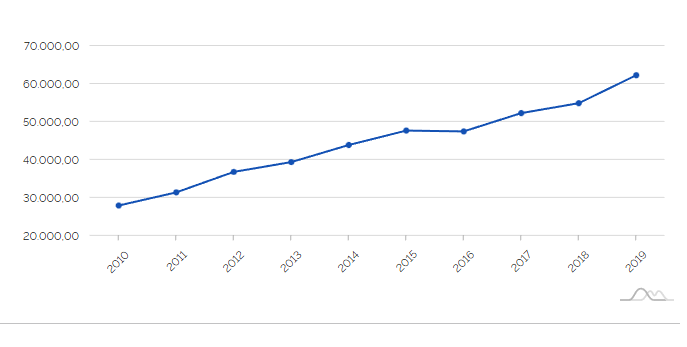

Área territorial 239.341 km2 (2021)
População estimada 36.864 (2021)
Densidade demográfica 135,70 hab/km² (2010)
Escolarização 6 a 14 anos 96,9% (2010)
Índice de desenvolvimento humano municipal 0,764 (2010)
Índice de desenvolvimento humano municipal 0,764 (2010)
Receitas realizadas 233.602,19R$ (×1000) (2017)
Despesas empenhadas 216.720,68R$ (×1000) (2017)
PIB per capita 62.317,96R$ (2019)

A economia de Gramado é graças ao turismo, com 90% de sua renda vindo dele. Porém outras oportunidades no ramo da indústria e comércio surgiram com seu crescimento do potencial turístico da cidade, gramado e uma cidade dos móveis, malhas e também seus artesanatos.
Fonte IBGE